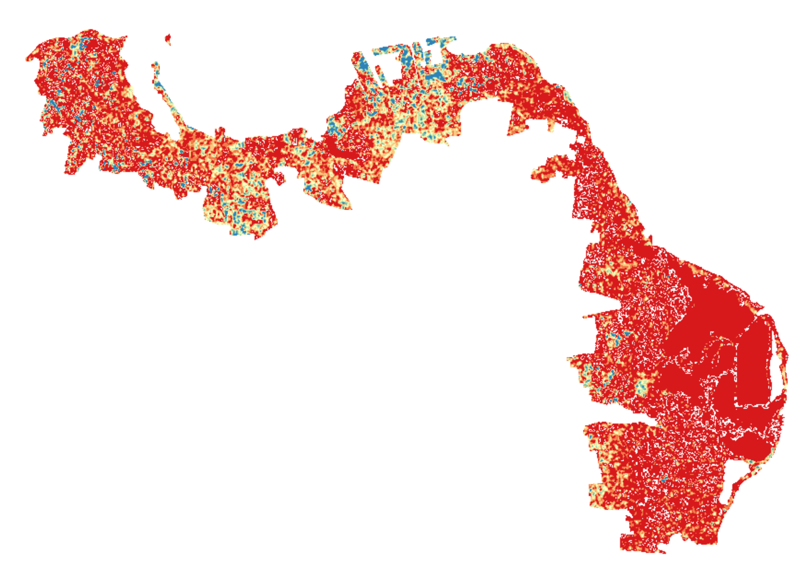
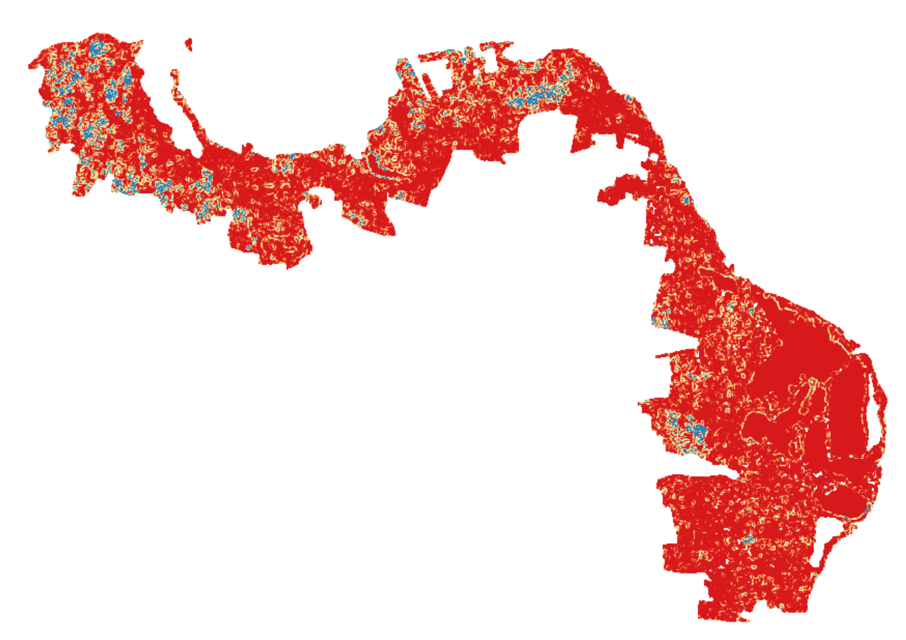
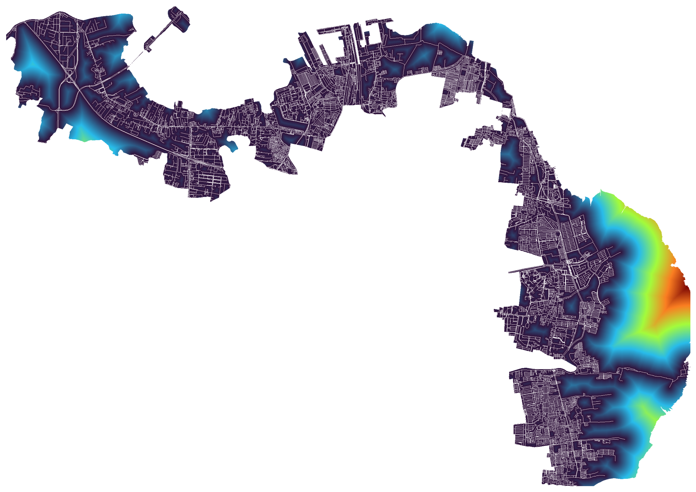
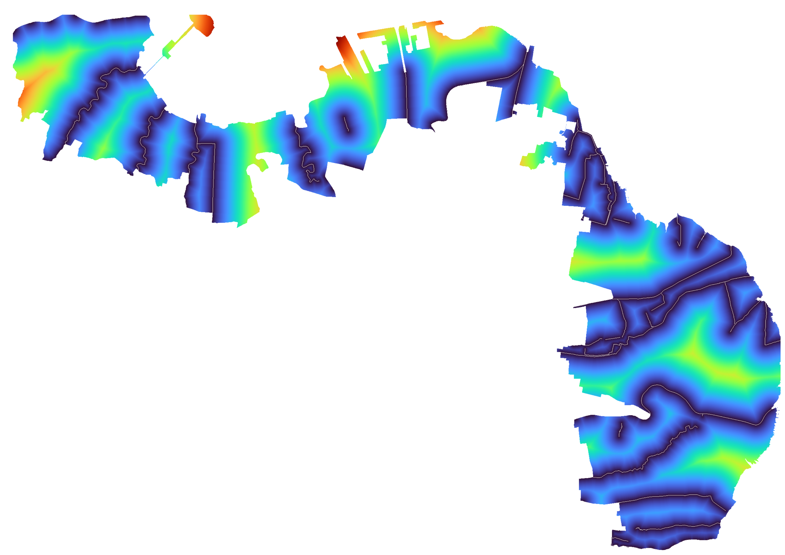
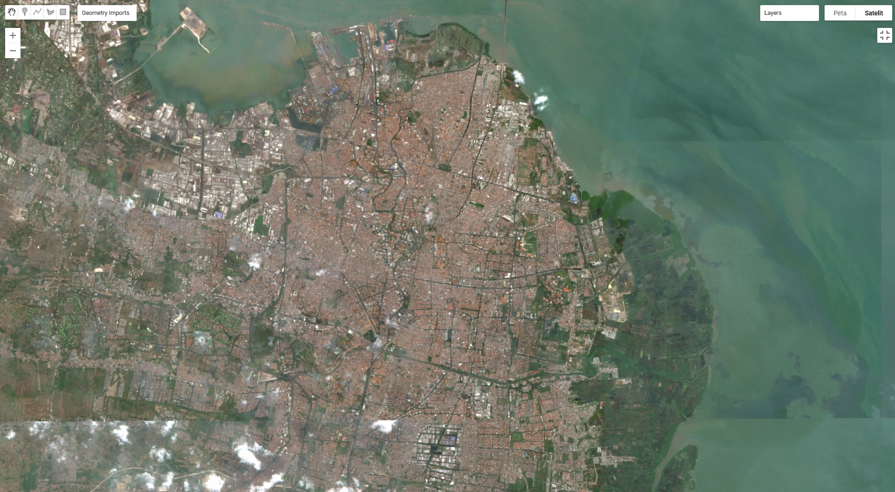
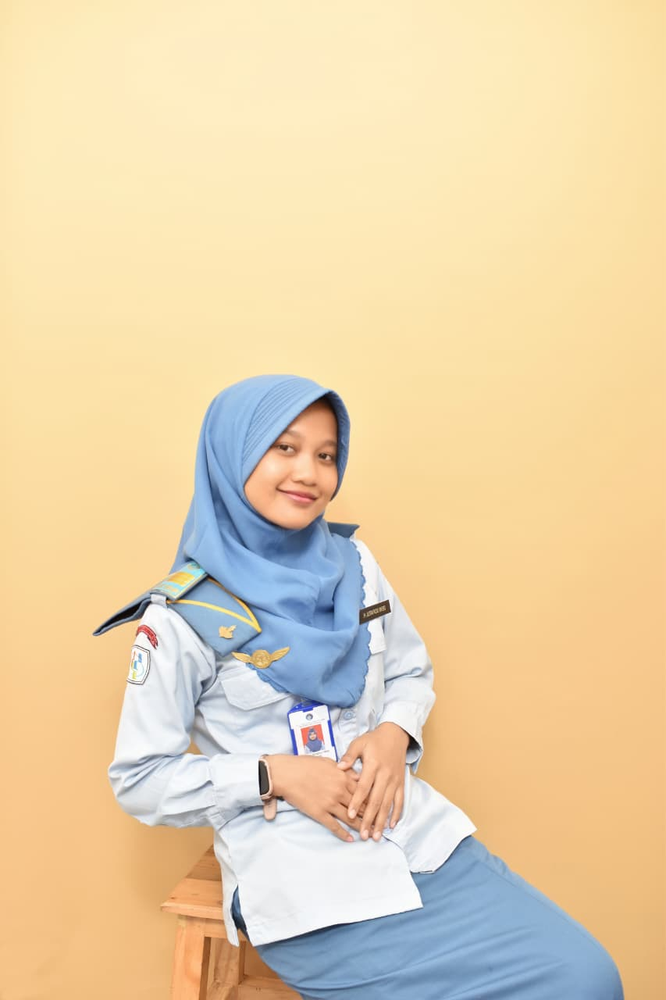

"Analisis Spatio-Temporal dan Prediksi Perubahan Tutupan Lahan Mangrove Menggunakan Citra Sentinel-2 dan Model Cellular Automata-Artificial Neural Network (CA-ANN)."
Kawasan pesisir Surabaya memegang peranan vital sebagai infrastruktur hijau penahan abrasi dan intrusi air laut. Sayangnya, kawasan metropolitan ini menghadapi tekanan konversi lahan yang sangat masif menjadi kawasan industri, tambak, dan permukiman permanen (Yusuf & Susetyo, 2019). Data Badan Pusat Statistik (BPS) mengonfirmasi hal ini, mencatat lonjakan penduduk Kota Surabaya secara signifikan dari 2.885.245 jiwa (2018) menjadi 3.018.022 jiwa (2024).
"Kawasan pesisir Surabaya memiliki kerentanan tinggi terhadap banjir rob dengan ketinggian pasang maksimum mencapai 130 cm hingga 150 cm. Kehilangan mangrove secara langsung akan melipatgandakan risiko bencana kota."
— (BMKG Maritim Tanjung Perak & Pemkot Surabaya, 2024)
Data administratif terbaru dari Dinas Ketahanan Pangan dan Pertanian (2025) menunjukkan penyusutan drastis di area yang bahkan telah berstatus kawasan lindung konservasi:
| Lokasi Konservasi | 2023 (Ha) | 2025 (Ha) | Total Perubahan |
|---|---|---|---|
| KRM Wonorejo | 56.00 | 8.00 | -48.00 Ha |
| THR Lempung | 4.40 | 2.35 | -2.05 Ha |
| THR Pakal 1 & 2 | 13.30 | 12.86 | -0.44 Ha |
Rencana Proyek Strategis Nasional (PSN) berupa reklamasi di pesisir Surabaya dinilai berbenturan dengan upaya mitigasi iklim dan mengancam kelestarian sisa hutan mangrove kota.
Aktivis lingkungan menyoroti bahwa reklamasi di pesisir Surabaya berpotensi merusak mangrove sebagai pelindung alami, memicu abrasi, intrusi air laut, hingga banjir rob.
Menghadapi potensi banjir rob akibat fenomena pasang maksimum, Pemkot Surabaya memperkuat perlindungan pesisir melalui pelestarian mangrove dan pembangunan tanggul.
Pemrosesan cloud computing citra Sentinel-2. Meliputi cloud masking (<20%) dan Median Composite. Mengeksekusi algoritma Random Forest (100 trees, rasio 80:20).
Eksekusi pemodelan spasial CA-ANN. ANN dilatih (LR: 0.01, iterasi: 1000, momentum: 0.10) memodelkan probabilitas transisi, dan CA mensimulasikan letak sel spasial hingga 2030.
Ekstraksi data variabel pendorong topografi (biofisik): Elevasi (DEM) untuk genangan pasang surut dan Kemiringan Lereng (Slope) untuk stabilitas sedimen mangrove.
Ekstraksi data vektor untuk dianalisis menggunakan Euclidean Distance, menghasilkan variabel pendorong: Jarak ke Jalan (antropogenik) dan Jarak ke Sungai (hidrologi).
Pemilihan keempat variabel fisik ini didasarkan pada relevansinya terhadap daya dukung lingkungan mangrove secara hidrologi & topografi, serta untuk mengukur besarnya tekanan aksesibilitas antropogenik di kawasan metropolitan Surabaya.

Ketinggian lahan secara teknis menentukan zonasi frekuensi genangan air pasang laut. Hasil analisis keruangan membuktikan bahwa mangrove Surabaya paling optimal berkembang di zona elevasi sangat rendah yakni 0–2 mdpl dengan kontribusi perkembangan mencapai 48,27%.

Faktor pembatas fisik yang menentukan stabilitas sedimen untuk retensi air. Perkembangan mangrove sangat terkonsentrasi pada zona dengan kelerengan sangat landai yakni 0%–3% dengan dominasi mutlak sebesar 74,93%.

Variabel antropogenik yang merepresentasikan ancaman konversi. Pertumbuhan mangrove secara persisten menjauhi jaringan jalan (> 60 meter) dengan proporsi 54,08%. Area di dekat jalan sangat rentan alih fungsi menjadi lahan komersial/terbangun.

Sungai adalah urat nadi ekologis penyuplai sedimen bernutrisi dan air tawar. Mayoritas dinamika mangrove memusat pada zona sangat dekat aliran sungai (0 – 500 meter) sebesar 58,90%.
Tantangan utama di perkotaan heterogen adalah sulitnya memisahkan piksel mangrove dari vegetasi darat biasa. Penelitian ini mengintegrasikan 4 indeks spektral khusus untuk dieksekusi oleh Random Forest secara terintegrasi.

Metode Random Forest terbukti sangat presisi. Luasan mangrove berfluktuasi dari 869,64 Ha (2018) memuncak menjadi 1.202,30 Ha (2021) berkat keberhasilan reforestasi (pertumbuhan baru gain masif di Pamurbaya). Namun terfragmentasi kembali menjadi 1.078,41 Ha (2024) akibat ekspansi lahan terbangun yang semakin menyebar ke arah pesisir.
| Kelas Lahan | 2018 | 2021 | 2024 |
|---|---|---|---|
| Mangrove | 869.64 | 1,202.30 | 1,078.41 |
| Tambak | 3,766.58 | 3,736.50 | 3,455.59 |
| Lhn Terbangun | 3,220.18 | 3,051.24 | 3,413.58 |
| Veg. Lainnya | 3,046.97 | 2,864.27 | 2,895.99 |
| Sungai | 114.72 | 163.78 | 174.52 |
Persentase luas area mangrove terhadap total luas wilayah pada masing-masing 23 Kelurahan Pesisir Kota Surabaya.
Kawasan Pantai Timur Surabaya (Pamurbaya) memegang persentase kelestarian paling dominan. Kelurahan Kalisari, Kejawaan Putih Tambak, Gunung Anyar Tambak, dan Wonorejo konsisten menempati posisi teratas dengan proporsi tutupan vegetasi yang sangat terjaga secara spasial.
Berbanding terbalik dengan Pantai Utara (Panturbaya). Kelurahan Gebang Putih, Perak Utara, dan Tanah Kali Kedinding mencatatkan persentase mangrove nyaris mendekati 0%. Hal ini merepresentasikan dampak ekstrem dari alih fungsi lahan permanen menjadi infrastruktur pelabuhan dan kawasan industri berat.
Model memprediksi bahwa pada tahun 2030, luasan mangrove cenderung mulai stabil dengan laju penyusutan yang sangat melambat menjadi 1.045,81 Ha. Meskipun tutupan mangrove menunjukkan resiliensi, ancaman ekstrem datang dari ekspansi lahan terbangun yang diproyeksikan melonjak secara drastis sebesar +5,11% (mencapai 3.976,47 Ha). Ledakan urbanisasi ini secara masif akan mengonversi dan memecah-belah kawasan tambak di sekitar *buffer zone* (sabuk hijau) pesisir.
| Periode | Δ Mangrove | Δ Lhn. Terbangun | Δ Tambak |
|---|---|---|---|
| 2018 - 2021 | +332.66 Ha | -168.93 Ha | -30.09 Ha |
| 2021 - 2024 | -123.89 Ha | +362.33 Ha | -280.90 Ha |
| 2024 - 2030 (Proyeksi) |
-32.60 Ha (-0.30% thd Total) |
+562.90 Ha (+5.11% thd Total) |
-252.74 Ha (-2.29% thd Total) |
*Persentase dihitung berdasarkan proporsi perubahan terhadap total keseluruhan luas wilayah analisis (±11.018 Hektar) untuk merepresentasikan pergeseran tata ruang secara makro.
Ekstraksi citra Sentinel-2 dengan algoritma Random Forest multi-indeks berhasil memetakan tutupan lahan pesisir Surabaya (2018–2024) dengan presisi luar biasa (Akurasi > 97%). Dinamika mangrove terbukti sangat dipengaruhi oleh pasokan sedimen dan air dari sungai (0-500m), elevasi rendah (0-2 mdpl), lereng landai (0-3%), dan konsisten menjauhi tekanan jaringan jalan raya (>60m).
Model CA-ANN terbukti valid secara spasial memproyeksikan masa depan. Pada tahun 2030, luasan mangrove Surabaya diprediksi cenderung stabil melambat di angka 1.045,81 Hektar. Namun, tutupan mangrove menghadapi ancaman ekstrem dari ekspansi lahan terbangun yang melonjak drastis sebesar 5,11% (+562,90 Ha), yang akan secara masif mendesak kawasan tambak di sekitar sabuk hijau.
"Pemerintah Kota Surabaya (Dinas Lingkungan Hidup) disarankan untuk memperketat pengawasan tata ruang dan penegakan hukum di kawasan penyangga pesisir Pamurbaya. Perlindungan lahan tambak yang berbatasan langsung dengan mangrove wajib diintegrasikan ke dalam skenario mitigasi agar buffer zone (sabuk transisi) ini tidak musnah sepenuhnya terkonversi menjadi kawasan komersial dan industri pada tahun 2030."

Peneliti Utama | 222212565
Mahasiswa D-IV Komputasi Statistik Peminatan Sains Data, Politeknik Statistika STIS (Angkatan 2026). Memiliki ketertarikan mendalam pada Data Science, Geographic Information Systems (GIS), Remote Sensing, dan analisis keruangan untuk pelestarian lingkungan pesisir.
Dosen Pembimbing
Dosen di Politeknik Statistika STIS dengan kepakaran riset di bidang Computational Statistics, Analisis Data Terapan, dan Pemodelan Statistik. Memiliki publikasi di bidang regresi, machine learning, serta pemanfaatan big data untuk statistik resmi dan kebijakan publik.